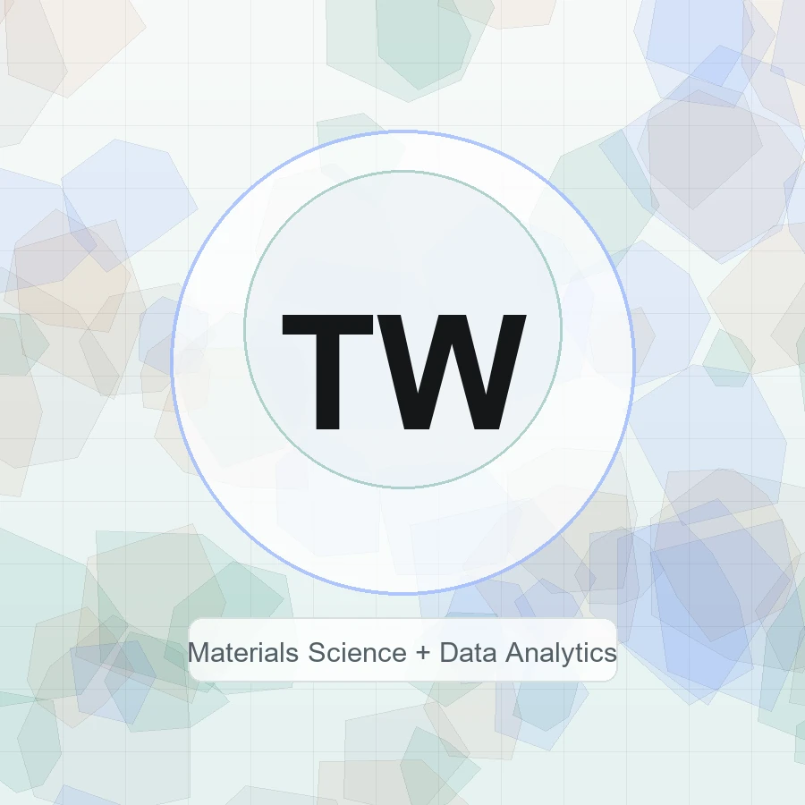

Materials Science + Data Analytics
Tzu-Wei Wang (William)
I connect microscopy, thermal and mechanical characterization, and machine learning to study materials for energy and extreme-environment applications.

Explore
A portfolio split by how people actually read it
Use the pages below to jump directly into research experience, outputs, awards, or contact details.
Research
Internships and projects across HEA-based SRMs, TEM simulation, microscopy informatics, and H2O2 electrosynthesis.
02Outputs
Conference presentations, accepted abstracts, submitted work, data publication, and manuscripts in preparation.
03Awards
Research funding, poster awards, scholarships, iGEM recognition, and ACS student leadership.
04Contact
Email, LinkedIn, CV download, language profile, and current collaboration interests.
Research Signal
Characterization-driven materials informatics
My work starts with measurement quality: controlled imaging parameters, interpretable characterization, and ML workflows that stay anchored to physical meaning.